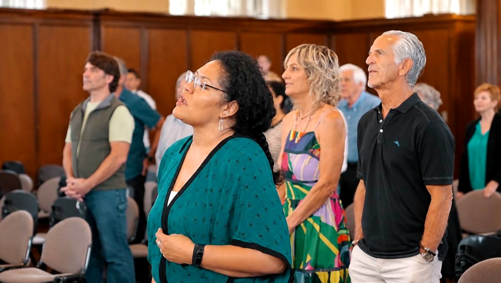
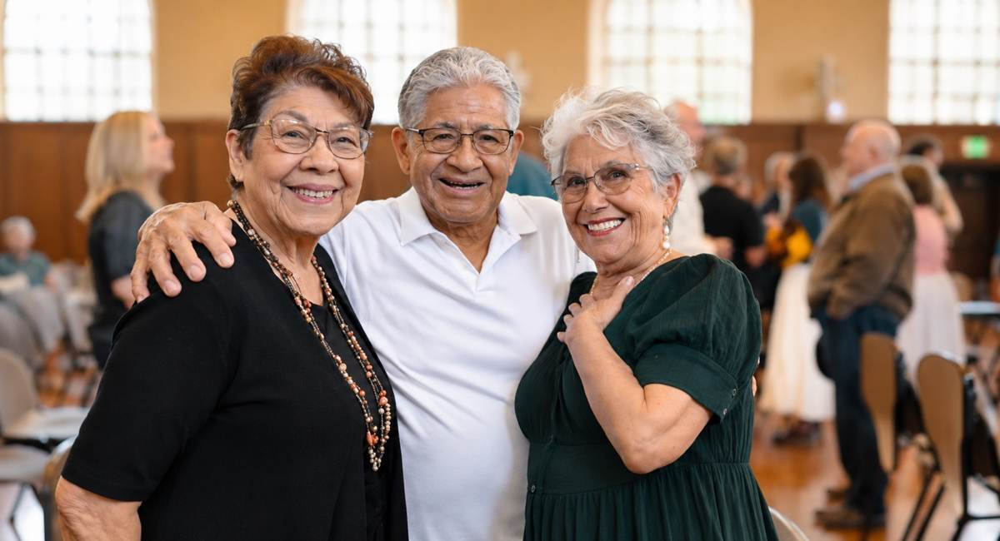

There is room
to belong.
Gathering a community committed to the way of Christ and finding our place in God's Story.
Gathering a community committed to the way of Christ and finding our place in God's Story.

Meet Dave.
Dave Robinson, MDiv, DMin
Director of Ministries and Teaching Pastor
Dave is an artist, author, mentor, counselor, and teacher. His thoughtful insights and interactive style characterize many of our gatherings.
Get to Know DaveCome as you are.
Grow together.
BayMarin is a church community seeking honest and helpful ways of pursuing Christian spirituality in the normal routines of life. We center our lives around the person and teachings of Jesus through strong relationships, thoughtful teaching, biblical study, and healthy spiritual rhythms.
Our StoryFaith in community.
A place for people, faith, and community to grow together.
Community Groups
Find your people. Build friendships. Grow together.
These are areas of community interest. BayMarin will confirm which groups and gatherings are currently available.
Starting Point
for First Timers
New to BayMarin? We'd love to help you feel at home. Find out what to expect on Sunday, get to know our community, and discover simple next steps to connect.
No insider knowledge required. Come with your questions, your story, and your curiosity.
Plan Your First Visit
Service with Purpose
Bring your gifts to the work of loving our neighbors. From welcoming people on Sundays to supporting community partnerships, there are meaningful ways to get involved.

Join Us at Church
There's a place for you this Sunday.
Get DirectionsGuzman Hall · Dominican University
50 Acacia Ave · San Rafael, CA 94901
Stay in the loop.
Want to hear what's happening at BayMarin? Connect with us and we'll help you find the right next step.
Enter your details to prepare an email to BayMarin. No information is stored on this prototype.
Our way of life.
Four rhythms that shape how we follow Jesus and show up for one another.
Abide.
Finding our life and identity in Jesus.
Belong.
Making room for authentic relationships.
Create.
Bringing beauty and fresh thinking into the world.
Demonstrate.
Participating in restoration and care for others.